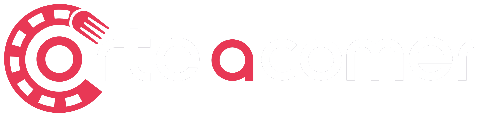

Seguimos el call sheet
Desayuno, snacks, comida, cena y coffee break coordinados con tiempos reales de operación.


Food Operations for Productions
Tú produces. Nosotros alimentamos la operación.
Desayunos, comidas, cenas, box lunch, coffee break, hidratación y hospitalidad para staff, crew, talento y cliente. Diseñamos el servicio alrededor de tu call sheet, tus horarios y tu sede.
Galería de servicios
Desde un buffet para crew hasta un coffee station, box lunch o atención ejecutiva. Adaptamos el servicio al formato, los horarios y las necesidades de cada proyecto.


Especialistas en producción
Una filmación, producción o evento no funciona con horarios de restaurante. Partimos del call sheet, los perfiles, la sede, las ventanas de servicio y la logística para que la alimentación acompañe al proyecto, no lo frene.
Desayuno, snacks, comida, cena y coffee break coordinados con tiempos reales de operación.
Staff, crew, talento, cliente, invitados y espacios ejecutivos dentro del mismo proyecto.
Box lunch, buffet, emplatado, coffee station, hidratación o combinaciones según necesidad.
Menú, rutas, montaje, ventanas de entrega, servicio, reposición y cierre.
Cómo trabajamos
Nos das los datos críticos. Nosotros proponemos menú, formato de servicio y ejecución.
Fecha, ciudad, horarios, cantidad y perfiles.
Menú, servicio, bebidas y formatos adecuados.
Rutas, personal, montaje y ventanas de entrega.
Orden, higiene, puntualidad y reposición.
Encuentra tu solución
Entra directamente al servicio que estás buscando o cuéntanos tu operación y nosotros diseñamos la combinación adecuada.
Nuestro portafolio
Alimentación completa y confiable para staff y crew durante jornadas de producción.
Desayuno · comida · cenaFormatos prácticos para movilidad, traslados, llamados y ventanas reducidas.
Box lunch · entregas escalonadasFruta, bowls, yogurt, semillas, bebidas y acompañamientos ligeros.
Healthy corner · snacks · hidrataciónHospitalidad con presentación cuidada para talento, invitados y cliente.
Servicio especial · atención dedicadaAtención para juntas, clientes y espacios ejecutivos dentro del proyecto.
Emplatado · hospitalidadCafé, té, bebidas y acompañamientos disponibles durante la operación.
Coffee break · servicio continuoFormatos de servicio
Para grupos medianos y grandes y ventanas de alimentación definidas.
Para llamados escalonados, movilidad y consumo rápido.
Para talento, clientes, juntas o servicios de mayor presentación.
Café, hidratación y snacks disponibles durante la jornada.
Operación responsable
Planeamos cantidades, formatos y logística para reducir merma y materiales innecesarios sin comprometer la operación.
Full Food Operations
Desde equipos pequeños hasta producciones y eventos de gran escala. Coordinamos servicio dentro y fuera de CDMX y adaptamos menú, formato y logística al alcance real del proyecto.
Preguntas frecuentes
Respuestas concretas para cotizar más rápido y elegir el formato adecuado.
Sí. Diseñamos servicios para staff, crew, talento y cliente considerando call times, locación, jornadas, ventanas de alimentación y necesidades de operación.
Sí. Podemos operar uno o varios tiempos, además de snacks, hidratación y coffee break permanente o por horarios.
Sí. Diseñamos formatos individuales fáciles de distribuir para llamados escalonados, traslados y equipos con poco tiempo disponible.
Sí. Production Coffee Bar puede incluir café, té, diferentes opciones de leche, agua, fruta, panadería, galletas, snacks y opciones saludables según alcance.
Sí. Primero revisamos facilidades, accesos, electricidad, agua y espacio disponible para definir el formato operativo más conveniente.
Sí. Atendemos juntas, congresos, convenciones, activaciones y espacios ejecutivos con formatos buffet, emplatados, coffee break o box lunch.
Sí. Coordinamos operaciones en distintas ciudades de México según fechas, volumen, logística y alcance del proyecto.
Sí. Cantidad de personas, tiempos de servicio, tipo de proteína, presentación, sede y formato operativo son variables que usamos para construir una propuesta viable.
Fecha, ciudad o sede, horarios aproximados, número de personas y tiempos de alimentación. Si ya conoces el perfil y el formato deseado, mejor todavía.
Recibe una propuesta
Con fecha, ciudad, número de personas, horarios y tiempos de alimentación podemos construir una primera propuesta útil y aterrizada.